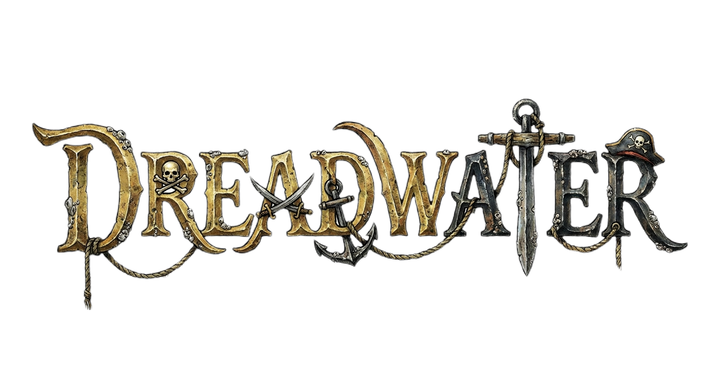

ACCIÓN
✔ Aceptar
Cerrar

DREADWATER
JUGAR
AJUSTES
CÓMO JUGAR
ACERCA DE
AJUSTES
MÚSICA: ON
AMBIENTE: ON
SONIDO: ON
VIBRACIÓN: ON
🗑️ BORRAR PARTIDA
VOLVER
ACERCA DE
Creado por
DX GAMES
Versión:
¡GRACIAS POR JUGAR!
VOLVER
CÓMO JUGAR
🎯
Objetivo:
navega, encuentra tesoros, hunde barcos enemigos y hazte rico.
⛵
Navegar:
toca el ancla ⚓ para zarpar. Las flechas giran el barco. Los botones 💣 disparan los cañones.
🍾
Ron:
se gasta mientras navegas. Sin ron, vas a medio gas. Cómpralo en las tabernas.
🗺️
Mapas:
te llevan a islas del tesoro. Cava y llévate el botín.
⚠️
El Cazador:
si llevas mucho oro (6000+), te buscará. Huye o pelea.
👻
El Fantasma:
solo aparece de noche y no se puede escapar de él. Si lo hundes, gran botín.
🌫️
Noche de ultratumba:
una noche rara con luna verde y niebla. El Fantasma viene más fuerte... y con más botín.
🗺️
Mapa:
toca el minimapa para pausar y abrir el mapa. Toca un lugar para poner un destino.
⚓
Puertos:
habla con la gente, escucha rumores (100G), compra ron, repara y mejora tu barco. Descansa para guardar la partida.
💀
Naufragios:
inspecciona los barcos hundidos: a veces hay botín... y a veces es una trampa.
VOLVER
MAPA DE NAVEGACIÓN
▶ REANUDAR
🏠 MENÚ PRINCIPAL
❌ QUITAR DESTINO
⚓
⬅️
➡️
⬆️💣
⬅️💣
💣➡️
⬇️💣
PUERTO
VICTORIA
CONTINUAR